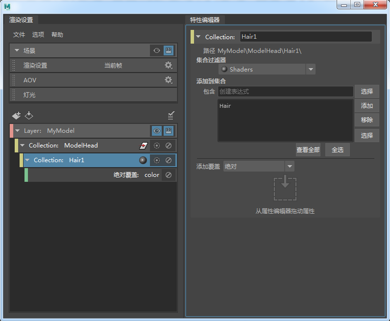

此处以头部模型为例，其头发、蒙皮、颈部和眼睛/嘴均已指定给不同的材质。
以下工作流将说明如何创建下列覆盖：
- 在模型的头发上创建颜色覆盖
- 在模型的眼睛和嘴上创建颜色覆盖
- 模型颈部上的颜色覆盖，用于将颈部连接到棋盘格纹理
- 使用着色器覆盖将蒙皮着色器替换为其他着色器
最终结果应如下所示：
在“大纲视图”(Outliner)中启用“显示 > 指定的材质”(Display > Assigned Materials)，可以显示指定给场景中每个对象的材质。
本示例假定您对层、集合、覆盖以及着色器覆盖有一个基本的了解。有关详细信息，请参见在渲染层中为集合创建覆盖、覆盖应用于集合中对象的材质和使用值覆盖将网络连接到属性。
覆盖模型的头发和眼睛/嘴的颜色
- 创建层并将其命名为“MyModel”。
单击
 使层可见。
使层可见。
- 在层上单击鼠标右键，选择“创建集合”(Create Collection)，然后将集合命名为“ModelHead”。
- 选定 ModelHead 集合后，从“大纲视图”(Outliner)中选择“头部”(Head)，然后在“特性编辑器”(Property Editor)中单击“添加”(Add)，将其添加到集合中。
头部模型现已添加到层。
注： 默认情况下，仅将其变换节点添加到此集合。 - 在“大纲视图”(Outliner)中，选择任意着色器，如“蒙皮”(Skin)。在“蒙皮”(Skin)着色器的“属性编辑器”(Attribute Editor)中，使用鼠标中键将“颜色”(Color)属性拖放到 ModelHead 集合的“特性编辑器”(Property Editor)以创建覆盖。
ModelHead_shaders 子集合将随对应的颜色覆盖一起创建。选择该集合可看到在“特性编辑器”(Property Editor)中，“集合过滤器”(Collection Filters)已设置为“着色器”(Shaders)。
在“特性编辑器”(Property Editor)中单击“全选”(Select All)，可以看到所有“蒙皮”(Skin)、“头发”(Hair)、“颈部”(Neck)和“眼”(Eyes)着色器均包含在该集合中。该集合包含指定给头部模型的所有着色器。
- 在“特性编辑器”(Property Editor)中单击“添加”(Add)，然后移除“蒙皮”(Skin)、“颈部”(Neck)和“眼”(Eyes)，只留下“头发”(Hair)。从表达式字段中移除 *。
该集合现在仅包含“头发”(Hair)着色器。将其重命名为“头发”(Hair)。
 - 选择颜色覆盖并将颜色更改为绿色。在视口中，模型的头发将变为绿色。
- 当 MyModel 层仍然设置为可见时，再次选择 ModelHead 集合，然后选择“蒙皮”(Skin)着色器。在“蒙皮”(Skin)着色器的“属性编辑器”(Attribute Editor)中，在“颜色”(Color)属性上单击鼠标右键，然后选择“为可见层创建绝对覆盖”(Create Absolute Override for the Visible Layer)。
ModelHead_shaders 子集合将随对应的颜色覆盖一起创建。如前所述，所有“蒙皮”(Skin)、“头发”(Hair)、“颈部”(Neck)和“眼”(Eyes)着色器均包含在该集合中。
- 选定 ModelHead_shaders 子集合的情况下，单击“特性编辑器”(Property Editor)中的“全选”(Select All)，单击“添加”(Add)，然后移除皮肤、颈部和头发，只留下眼睛。从表达式字段中移除 *。
该集合现在仅包含“眼”(Eyes)着色器，后者同时应用于“眼”(Eyes)和“嘴”(Mouth)。将其重命名为“Eyes_Mouth”。
- 选择颜色覆盖并将颜色更改为红色。在视口中，模型的眼和嘴将变为红色。
将棋盘格纹理映射到模型颈部着色器的颜色属性
- 当 MyModel 层仍然设置为可见时，再次选择 ModelHead 集合，然后选择任一着色器；例如，“颈部”(Neck)。在“颈部”(Neck)着色器的“属性编辑器”(Attribute Editor)中，在“颜色”(Color)属性上单击鼠标右键，然后选择“为可见层创建绝对覆盖”(Create Absolute Override for the Visible Layer)。
ModelHead_shaders 子集合将随对应的颜色覆盖一起创建。如前所述，所有“蒙皮”(Skin)、“头发”(Hair)、“颈部”(Neck)和“眼”(Eyes)着色器均包含在该集合中。
- 选定 ModelHead_shaders 子集合的情况下，单击“特性编辑器”(Property Editor)中的“全选”(Select All)，单击“添加”(Add)，然后移除皮肤、眼睛和头发，只留下颈部。从表达式字段中移除 *。
将该集合重命名为“颈部”(Neck)。
- 选择颜色覆盖，然后单击 按钮将“颜色”(Color)属性连接到纹理，如“棋盘格”(Checker)。
在视口中，模型的颈部显示时带有棋盘格纹理。
使用着色器覆盖将模型的蒙皮着色器替换为其他着色器
- 选择 ModelHead 集合，单击鼠标右键，然后选择“创建着色器覆盖”(Create Shader Override)。
名为 ModelHead_shadingEngines 的集合将随对应的着色器覆盖一起创建。选择该集合可看到“集合过滤器”(Collection Filters)已设置为“着色引擎”(Shading engines)。该集合包含应用于头部模型的所有着色引擎。
将该集合重命名为“蒙皮”(Skin)。
- 在“大纲视图”(Outliner)中选择 SkinSG，然后在“特性编辑器”(Property Editor)中单击“添加”(Add)，将其添加到集合中。从表达式字段中移除 *。
- 选择着色器覆盖，然后单击 图标，以将 SkinSG 着色引擎连接到其他着色器，如 blinn。
调整 blinn 着色器上的颜色，然后在视口中的模型更新上查看蒙皮。